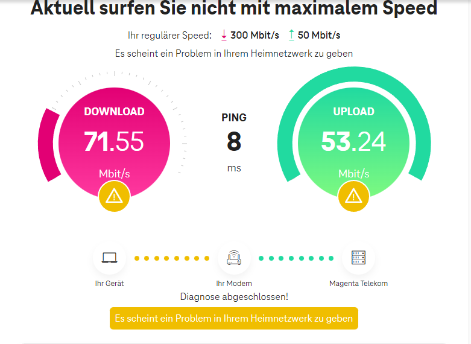

Hey,
Ich habe bemerkt das ich seit ca. einer Woche eine sehr niedrige Download rate habe bewegt sich zu jeder Tageszeit so um die 70-80Mbit/s.
Die Upload-Rate ist jedoch immer im Grünen Bereich mit 50+ Mbit/s

Ich bin vor einem Jahr umgezogen und habe meinen Tarif übernehmen können und hat anfangs auch super Funktioniert.
Ich habe nur 3 Geräte im Haushalt und Wohne alleine.
Ich bin mit W-Lan mit dem Router verbunden, aber auch wenn ich übers LAN Kabel gehe bekomme ich keine Höhere DL-Rate.
Router restarten, Kabel geprüft etc.
Irgendwelche Tipps/Ideen muss ich mir einen Techniker rufen? Ist mit meinen Arbeitszeiten halt sehr schwer zu vereinbaren

Lg